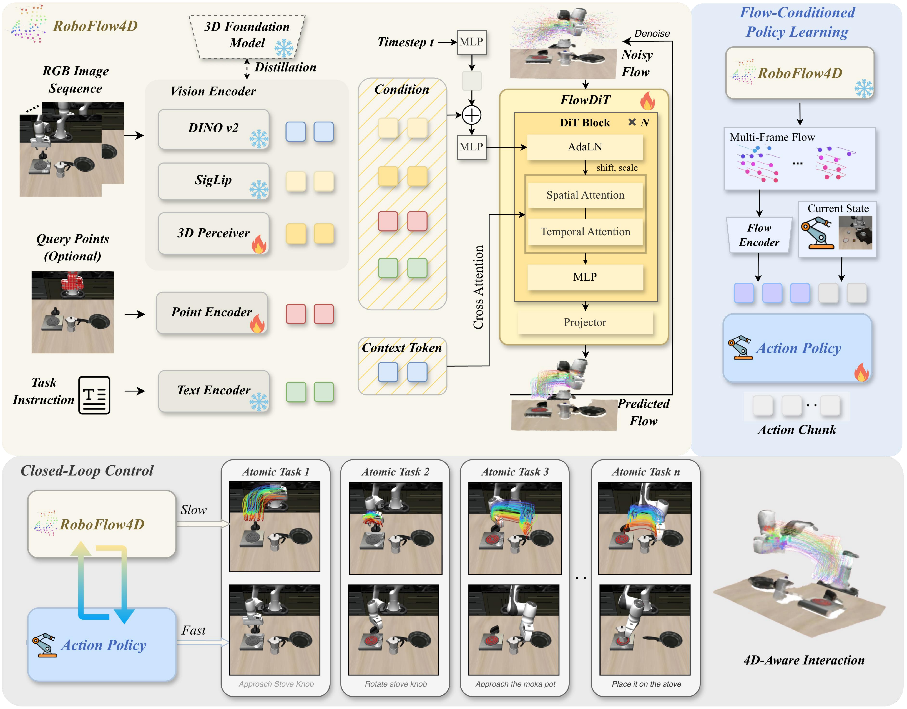

Planning in 3D Space
Pipeline

Top left. RoboFlow4D encodes the RGB sequence, optional query points, and task instruction into visual, point, and text tokens, then FlowDiT predicts future multi-frame 3D flows. Top right. A policy learns actions conditioned on the current state and explicit flow. Bottom. The observation-planning-execution loop uses RoboFlow4D as a slow planner and the action policy as a fast executor.
Abstract
Planning and acting in 3D environments is a fundamental capability for robotic manipulation in the real world. Existing predictive flow planners often rely on modular pipelines that stack multiple submodels, which increases computational overhead and limits real-time deployment.
RoboFlow4D addresses this limitation with a lightweight flow world model that directly predicts multi-frame 3D flows from visual observations and textual instructions. The predicted flows guide action generation in an observation-planning-execution closed loop, improving manipulation success rates while remaining efficient enough for real-time robotic control.
+6.2% / +11.0%
Average success-rate gains on LIBERO and ManiSkill3 over the base policy.
120x Faster Planning
RoboFlow4D achieves a large speedup over modular flow-planning pipelines.
< 1 Second Latency
Goal-oriented planning remains lightweight enough for real-time deployment.
Simulation Success Videos
Pick up the milk and place it in the basket
Pick up the black bowl on the wooden cabinet and place it on the plate
Pick up the black bowl on the ramekin and place it on the plate
Open the top drawer and put the bowl inside
Put the cream cheese in the bowl
Put both moka pots on the stove
Put the white mug on the left plate and the yellow-white mug on the right plate
Real-World Videos & Flow Visualization
Pick up the brown cup and insert it into the black cup
Real Robot
Flow Visualization
Stage 1
Pick up the cup and place it in the white box
Real Robot
Flow Visualization
Stage 1
Open the top drawer, place the red cube inside, and close it
Real Robot
Flow Visualization
Stage 1
Pick up the red cube and place it on the blue cube
Real Robot
Flow Visualization
Stage 1
Quantitative Results
LIBERO Benchmark
Success rates (%) on fine-tuned robotic manipulation tasks.
| Method | Spatial | Object | Goal | Long | Average |
|---|---|---|---|---|---|
| Octo | 78.9 | 85.7 | 84.6 | 51.1 | 75.1 |
| CogACT | 87.5 | 90.2 | 78.4 | 53.2 | 77.3 |
| OpenVLA | 84.7 | 88.4 | 79.2 | 53.7 | 76.5 |
| TraceVLA | 84.6 | 85.2 | 75.1 | 54.1 | 74.8 |
| SpatialVLA | 88.2 | 89.9 | 78.6 | 55.5 | 78.1 |
| 4D-VLA | 88.9 | 95.2 | 90.9 | 79.1 | 88.6 |
| DP | 81.6 | 91.5 | 78.4 | 64.0 | 78.9 |
| w/ RoboFlow4D | 89.8 | 93.2 | 85.2 | 72.0 | 85.1 |
| Δ | +8.2 | +1.7 | +6.8 | +8.0 | +6.2 |
| DiT | 84.2 | 96.3 | 85.4 | 68.8 | 83.7 |
| w/ RoboFlow4D | 90.2 | 97.0 | 88.4 | 75.2 | 87.7 |
| Δ | +6.0 | +0.7 | +3.0 | +6.4 | +4.0 |
Real-World Results
Success rate (%) and completion time (seconds), averaged over about 20 trials.
| Method | Pick-and-Place | Stack | Assemble | Drawer | Avg. | |||||
|---|---|---|---|---|---|---|---|---|---|---|
| Succ. ↑ | Time ↓ | Succ. ↑ | Time ↓ | Succ. ↑ | Time ↓ | Succ. ↑ | Time ↓ | Succ. ↑ | Time ↓ | |
| π0-Fast | 70.0 | 55.9 | 20.0 | 41.6 | 30.0 | 56.3 | 10.0 | 88.2 | 32.5 | 60.5 |
| π0 | 80.0 | 37.6 | 30.0 | 28.0 | 40.0 | 35.3 | 15.0 | 62.0 | 41.3 | 40.7 |
| DP | 60.0 | 31.0 | 20.0 | 26.4 | 25.0 | 34.2 | 5.0 | 61.2 | 27.5 | 38.2 |
| w/ RoboFlow4D | 80.0 | 30.0 | 25.0 | 26.2 | 40.0 | 31.0 | 15.0 | 60.0 | 40.0 | 36.8 |
| Δ | +20.0 | -1.0 | +5.0 | -0.2 | +15.0 | -3.2 | +10.0 | -1.2 | +12.5 | -1.4 |
| DiT | 70.0 | 32.5 | 20.0 | 28.1 | 30.0 | 35.1 | 10.0 | 62.2 | 32.5 | 39.5 |
| w/ RoboFlow4D | 90.0 | 31.0 | 25.0 | 26.8 | 40.0 | 33.2 | 20.0 | 62.0 | 43.8 | 38.3 |
| Δ | +20.0 | -1.5 | +5.0 | -1.3 | +10.0 | -1.9 | +10.0 | -0.2 | +11.3 | -1.2 |
BibTeX
@inproceedings{lin2026roboflow4d,
title = {RoboFlow4D: A Lightweight Flow World Model Toward Real-Time Flow-Guided Robotic Manipulation},
author = {Sixu Lin and Junliang Chen and Huaiyuan Xu and Zhuohao Li and Guangming Wang and Yixiong Jing and Sheng Xu and Runyi Zhao and Brian Sheil and Lap-Pui Chau and Guiliang Liu},
booktitle = {International Conference on Machine Learning (ICML)},
year = {2026}
}